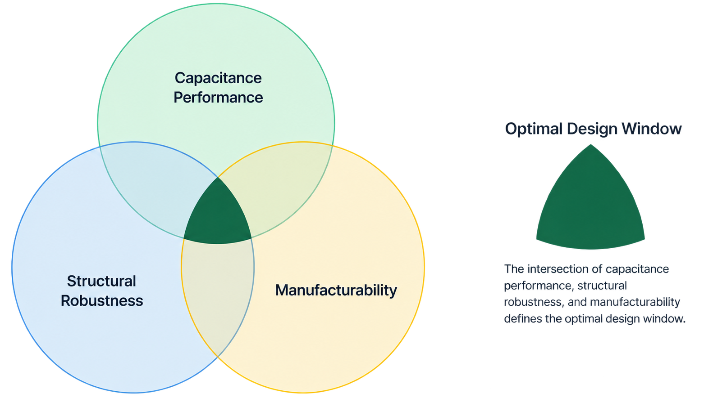
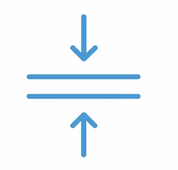
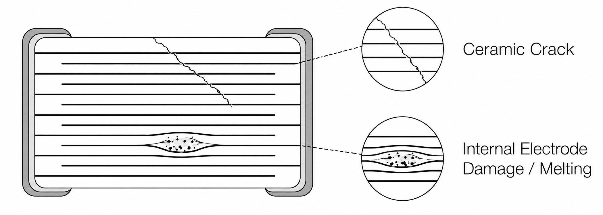

Case 03
MLCC Design Engineering & Reliability Validation
Background
From Target Specifications to Qualification-Ready Designs
New product series and capacitance extensions for existing series required new MLCC designs to meet defined electrical targets while remaining structurally robust and manufacturable. Design options were evaluated through material selection, internal structure, electrical performance, and reliability testing before qualification.
My Task — Define and Validate Design Candidates
Developed internal structure options for different capacitance targets, evaluated their electrical and structural performance, and selected suitable candidates for reliability qualification and production validation.
Challenge — Balance Capacitance, Robustness, and Manufacturability
Each design had to meet its capacitance target without sacrificing structural robustness or manufacturing feasibility. The challenge was to define a practical design window before moving into qualification.
Design Window Development
Practical Design Range
Evaluated electrical performance together with structural and process constraints to define feasible design boundaries.
Design Margin Assessment
Compared trade-offs within the design range and retained candidates with enough structural and process margin at the target electrical performance.
Validation Candidate Selection
Selected candidates that met electrical targets and remained within existing process capability.

Key Design Variables
Ceramicpowder

Dielectricthickness
Layercount
Electrodeconfiguration
Processconstraints
Reliability Judgment
01 Reliability Response Assessment
Reviewed reliability-test results and post-stress electrical behavior to identify abnormal responses and signs of possible structural weakness.
02 Qualification Judgment
Applied established acceptance criteria to determine qualification status and distinguish normal variation from responses that required further review.
03 Engineering Disposition
Determined whether each design could proceed, required further review,
or should move to failure investigation based on the combined test results.
Failure Analysis & Feedback
Electrical Response → Physical Evidence → Root Cause
Used physical characterization and failure analysis to investigate abnormal electrical behavior and identify the root cause. Correlated electrical results with physical evidence to determine the relevant failure features and identify the design or process variables requiring review before the next build and revalidation.

Design Closure
Revalidation
Revised designs were revalidated against the same electrical and reliability criteria before release.
Burn-In Screening
Established model-specific burn-in conditions, evaluated screening results, and used the findings to support release decisions.
Outcome
3 products advanced to mass production
10+ models supported from design development through qualification